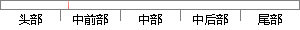

在忘记密码子模块中，用户先用自己的邮箱进行重置密码验证，验证通过后即可重新设置自己的密码。
片段位置图

相似结果|
相似片段 1：将其发送到用户的邮箱中，用户获取到新密码后即可重新登录系统。如果用户想要自己重新设置密码，则可以在个人中心模块中对密码进行重置。当来访者是新用户时，可以点击首页上方的注册按钮进入新用户注册页面，该页面提示用户输入用户名、密码、邮箱等信息，注册成功后系统将重定向到登录页面，提示用户登录。
|
※ 片段修改建议 ※
近似词参考：- 忘记：健忘 忘掉 遗忘 忘怀
- 自己：本身
- 进行：举行
- 密码：暗码
- 通过：经由过程
- 过后：事后
- 即可：便可
- 重新：从头 从新
- 自己：本身
- 密码：暗码
系统自动生成语句：在健忘暗码子模块中，用户先用本身的邮箱举行重置暗码验证，验证经由过程后便可从头设置本身的暗码。
注：本片段修改建议为系统自动生成，仅供参考。